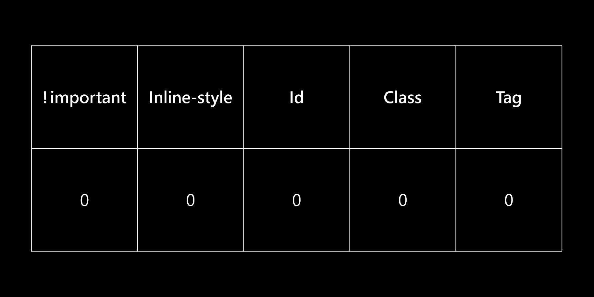

原來如此。
大方向
可以先記一個大方向：id > class > 標籤，越詳細的贏
HTML：
備註：下面要示範的是改 Pick me 的文字色彩
1 | <div class="wrapper"> |
CSS：
1 | .wrapper { |
按照剛剛說的規則， .item 跟 .wrapper 權重雖然一樣，但是 .item 會比較詳細。一個是「繼承」，一個是「直接選到元素」，所以 Pick me 最後會套用 .item 的規則。
再來看一個：
1 | .wrapper { |
這時候明顯是 #pickme 贏過 item 跟 .wrapper，因為 id > class。所以 Pick me 最後會套用 #pickme 的規則。
再來看一個：
1 | .wrapper { |
這時候雖然 div.wrapper > div.list > div.item 看起來很詳細，但它還是比不過 id，所以 Pick me 最後還是會套用到 #pickme 的規則。
權重的計算方式
理解大方向後，你可以把剛剛的規則想成是這樣子：

舉例來說：
- 如果 selector 有 id，id 欄位的分數就是 1，沒有的話就是 0
- 如果 selector 有 2 個 tag，tag 欄位的分數就是 2
- 如果 selector 有 3 個 class，class 欄位的分數就是 3
- 如果規則裡有 !important，!important 欄位的分數就是 1，沒有的話就是 0
- 如果是 inline-style，inline-style 欄位的分數就是 1，沒有的話就是 0
所以把剛剛的例子拿來計算會是這樣子：
1 | /* |
所以上面的權重就會是：
#pickme > div.wrapper > div.list > div.item > .item = .wrapper
權重如果一樣，就看位置，在「後面」的那個會被套用，所以 .item 會蓋掉 .wrapper。
另外要特別注意每個欄位要「拆開來看」，不要合在一起當成數字，不然很容易搞錯。
例如說：
- 12 個 class => 120
- 1 個 id 是 => 100
這樣會誤以為是 120 比較大，但是不是這樣。一定要拆開來看：
- 12 個 class => 0, 12, 0
- 1 個 id 是 => 1, 0, 0
意思是說無論你有幾個 class，你都不可能蓋掉 id，因為 id 的權重永遠比 class 高，不是逢十就能進位。
!important 或 inline-style 也是相同道理，你用再多 class 或 id 都不可能蓋掉：
1 | /* 0, 0, 0, 1, 0 */ |